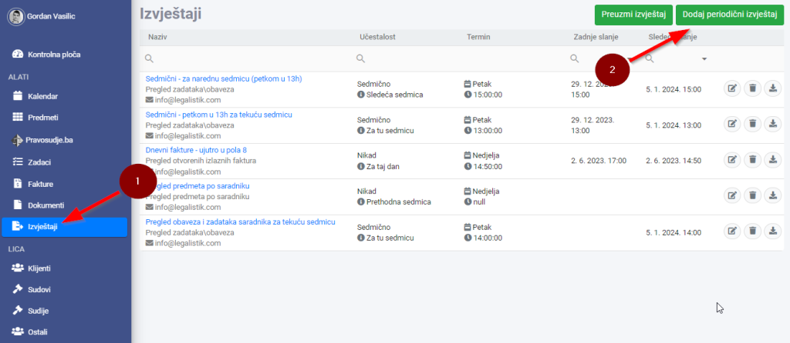
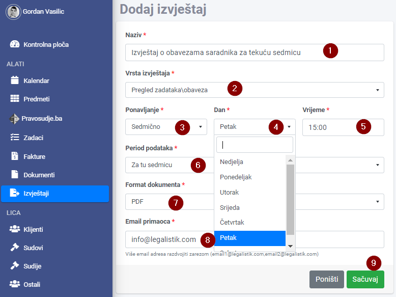
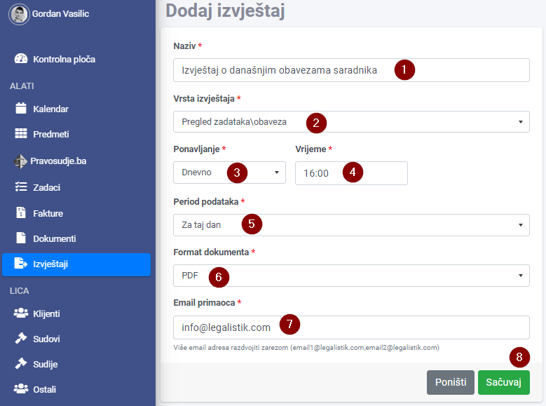
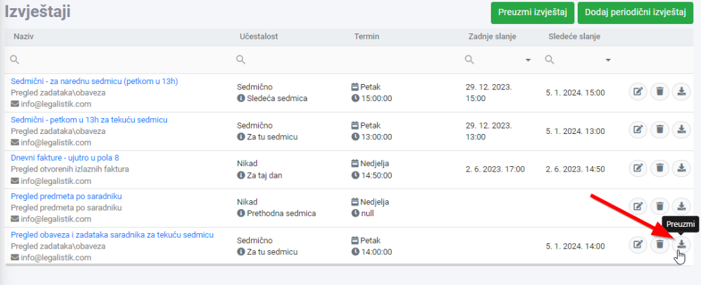
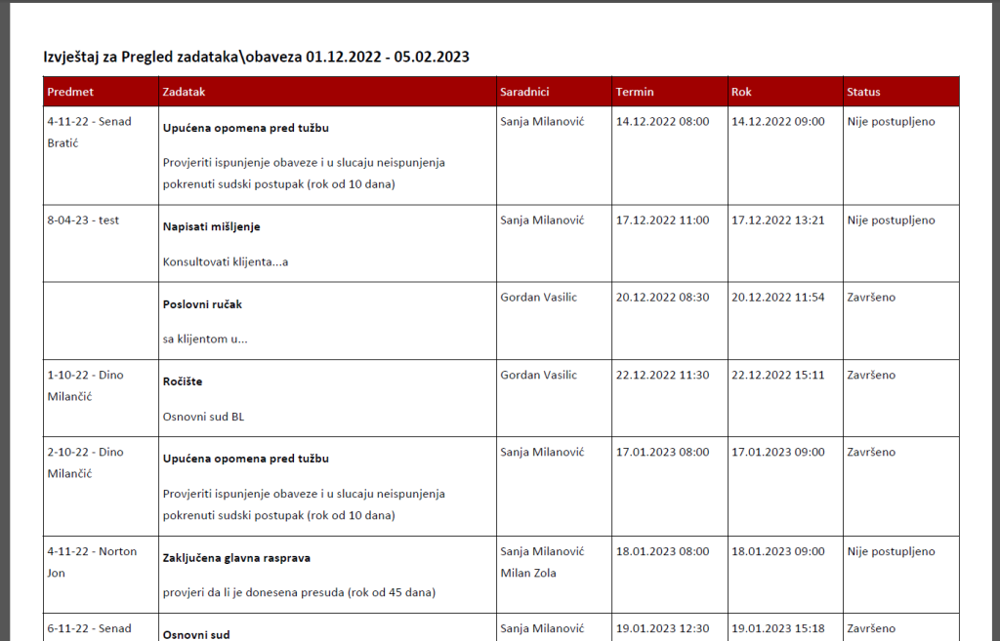

Ukoliko želite da na kraju dana, ili krajem sedmice primate izvještaj o statusima svih obaveza i zadataka saradnika za taj dan ili sedmicu, samo pratite uputstva ispod:
Otvorite modul Izvještaji i kliknite na Dodaj periodični izvještaj:

Sedmični izvještaj #
Za izvještaj koji hoćete da primite na email svakog petka u 15h, sa statusima svih zadataka svih saradnika, za tu sedmicu, popunite Izvještaj kao u primjeru ispod:

Naravno, za email primaoca ćete staviti svoje email adrese. Na kraju sačuvajte taj izvještaj
Dnevni izvještaj #
Za izvještaj koji hoćete da primate na email svakog dana u 16h, sa statusima svih zadataka za taj dan, popunite Izvještaj kao u primjeru ispod:

Da bi odmah vidjeli kako izgleda izvještaj, u listi izvještaja kliknita na Preuzmi ikonicu kraj izvještaja

Primjer izvještaja:
